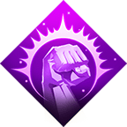
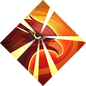
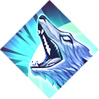
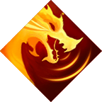
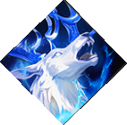

الحيوانات:-
ميزات ترقية المهارات
يد العون
تحصل على 50 مرات مساعدة المباني في صف البناء خلال 60 دقيقة وقت الانتظار 60 ساعة
ترقيةالمهارة
1- زيادة سرعة تطوير المباني 10%
2- زيادة سرعة البحث التقني 10%
3- زيادة هجوم المشاة 10%
4- زيادة حيوية المشاة 10%
كيفيه الحصول علئ الحيوان القتالي :- تدمير الغزاة والتحدي الناري ومهرجان التحالف
ميزات ترقية المهارات
وهج الصقر
تقلل سرعة الحملات لدى 1 امير خصم بنسبة90% لمدة 60 دقيقة وقت الانتظار : 72 ساعة
ترقيةالمهارة
1- زيادة هجوم الفرسان بنسبة 10% اثناء الدفاع عن المدن
2- زيادة هجوم الفرسان بنسبة 15% اثناء الهجوم عن المدن
3- زيادة دفاع الفرسان بنسبة 15%
4- زيادة فوة الهجوم الفرسان بنسبة 15%
كيفيه الحصول علئ الحيوان القتالي :- شراء الحزم
ميزات ترقية المهارات
الشفاء الطبي
تزداد سرعة علاج الجرحى بنسبة 50% لمدة 120 دقيقة. وقت الانتظار: 72 ساعة
ترقيةالمهارة
1- زيادة هجوم الرماة بنسبة 10% اثناء الدفاع عن المدن
2- زيادة هجوم الرماة بنسبة 15% اثناء الهجوم عن المدن
3- زيادة دفاع الرماة بنسبة 15%
4- زيادة هجوم الرماة بنسبة 15%
كيفيه الحصول علئ الحيوان القتالي :- المشاركة في الأحداث المحددة
ميزات ترقية المهارات
زئير الأسد
تقليل هجوم دفاع وحيوية المشاة المستهدفة بنسبة 35- لمدة 120 دقيقة. وقت الانتظار: 60 ساعة (ساعات).
ترقيةالمهارة
1- أثناء حروب المدن، زيادة حيوية العجلات بنسبة 10%
2- أثناءحروب المدن، زيادة هجوم العجلات بنسبة 15%
3- زيادة دفاع العجلات بنسبة 15%
4- زيادة حيوية العجلات بنسبة 15%
كيفيه الحصول علئ الحيوان القتالي :- شراء الحزم
ميزات ترقية المهارات
عواء البرية
زيادة هجوم، دفاع وحيوية المشاة بنسبة %30 لمدة 60 دقيقة. وقت الانتظار: 60 ساعة
1- زيادة هجوم المشاة بنسبة %10 أثناء الدفاع عن المدن
2- زيادة هجوم المشاة بنسبة 15% أثناء معارك المدن
3- زيادة دفاع المشاة بنسبة 15%
4- زيادة هجوم المشاة بنسبة 15%
كيفيه الحصول علئ الحيوان القتالي :- المشاركة في الأحداث المحددة
ميزات ترقية المهارات
نداء التنين
زيادة عدد أبطال الحشد +10 لمدة 60 دقيقة عند بدء الحشد. وقت الانتظار: 60 ساعة
1- زيادة هجوم العجلات بنسبة %10 أثناء الدفاع عن المدن
2- زيادة هجوم العجلات بنسبة 15% أثناء معارك المدن
3- زيادة دفاع العجلات بنسبة 15%
4- زيادة حيوية العجلات بنسبة 15%
كيفيه الحصول علئ الحيوان القتالي :- شراء الحزم
ميزات ترقية المهارات
سرعة الرياح
زيادة قوة الهجوم والدفاع ونقاط الحيوية لفرسان الهدف 30% لمدة 60 دقيقة. وقت الانتظار: 60 ساعة
1- زيادة هجوم الفرسان بنسبة %10% عند الدفاع عن المدن
2- زيادة هجوم الفرسان بنسبة %15% أثناء معارك المدن
3- زيادة حيوية الفرسان بنسبة 15%
4- زيادة هجوم الفرسان بنسبة 15%
كيفيه الحصول علئ الحيوان القتالي :- شراء الحزم، الأحداث المحددة
ميزات ترقية المهارات
السم القاتل
خلال 60 دقيقة، يموت %30 من جرحى العدو على الفور خلال المعركة التالية وقت الإنتظار 60 ساعة.
1- زيادة سرعة العلاج بنسبة 10%
2- زيادة هجوم الرماة أثناء الهجوم على القلاع بنسبة 15%
3- زيادة حيوية الرماة بنسبة 15%
4- زيادة هجوم الرماة 15%
كيفيه الحصول علئ الحيوان القتالي :- شراء الحزم، الأحداث المحددة
ميزات ترقية المهارات
غضب الوحوش
زيادة الضربة القاضية للمشاة بنسبة 12 لمدة 60 دقيقة. وقت الإنتظار: 60 ساعة
1- هجوم المشاة أثناء الدفاع عن القلاع 10%
2- هجوم المشاة أثناء معارك المدن 15%
3- مقاومة المشاة للضربة القاضية 10%
4- قوة المشاة التدميرية 15%
كيفيه الحصول علئ الحيوان القتالي :- شراء الحزم، الأحداث المحددة
ميزات ترقية المهارات
الثوران

زيادة ضربة البطل القاضيه بنسبة 12% لمدة 60 دقيقة. وقت الانتظار 60 ساعة
1- زياة هجوم الابطال بنسبة 10% اثناء الدفاع عن القلاع
2- زيادة هجوم الابطال بنسبة 15% لثناء معارك المدن
3- زيادة ضرر البطل بنسبة 10 %
4- زيادة الضربة القاضية بنسبة 15%
كيفيه الحصول علئ الحيوان القتالي :- شراء الحزم، الأحداث المحددة
ميزات ترقية المهارات
هدير الشتاء
زيادة معدل تدمير الفرسان بنسبة 12% لمدة 60 دقيقة. وقت الانتظار 60 ساعة.
1- زيادة هجوم الفرسان بنسبة 10% عند الدفاع عن المدن
2- زيادة هجوم الفرسان بنسبة 15% اثناء معارك المدن
3- زيادة حيوية الفرسان بنسبة 10%
4- زيادة معدل تدمير الفرسان بنسبه 15%
كيفيه الحصول علئ الحيوان القتالي :- شراء الحزم، الأحداث المحددة
ميزات ترقية المهارات
همس روح الابيض
زيادة معدل التدمير للرماة بنسبة 12% لمدة 60 دقيقة وقت الانتظار : 60 دقيقة.
زيادة هجوم الرماة اثناء الدفاع عن المدن بنسبة 10%
زيادة هجوم الرماة اثناء معارك المدن بنسبة 15$
زيادة حيوية الرماة بنسبة 15%
زيادة قوة الرماة التدميرية بنسبة 15%
كيفيه الحصول علئ الحيوان القتالي :- شراء الحزم، الأحداث المحددة